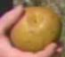

Piante |
| Garili Albero che cresce sul pianeta dei Vhnori. Il padre di Hatil Garan ha piantato alcuni di questi alberi che hanno fiorito per almeno tre anni di seguito. | Emanations | |
| Kaylos Frutto di un albero che nasce in un pianeta del quadrante Delta. L'aspetto è simile a una mela terrestre di color ruggine, ma Neelix avvisa che è estremamente tossico se ingerito. | State of Flux | |
 Leola Pianta che nasce spontaneamente in almeno un
pianeta del quadrante Delta. Della pianta la parte utilizzata è
la radice, dal gusto estremamente sgradevole, ma nota per le sue
proprietà nutritive. Neelix la
usa per cucinare alcuni suoi piatti. Da questa pianta si ricava anche un
unguento lenitivo (Tsunkatse). Leola Pianta che nasce spontaneamente in almeno un
pianeta del quadrante Delta. Della pianta la parte utilizzata è
la radice, dal gusto estremamente sgradevole, ma nota per le sue
proprietà nutritive. Neelix la
usa per cucinare alcuni suoi piatti. Da questa pianta si ricava anche un
unguento lenitivo (Tsunkatse). |
Parturition, Prototype, Basics - Part I, The Chute, Waking Moments, Thirty Days, Riddles, Tsunkatse, Fury, Repentance, The Void, Workforce - Part I | Il nome letto al contrario (senza la prima «L») dà «aloe», una nota pianta officinale. |
| Pianta di Borgia Classificata tra le carbonifere del III gruppo, è simile ad alcune piante carnivore terrestri. È una pianta velenosa e il veleno che produce è di tipo alcaloide. La sua struttura chimica è tipica dei pianeti di classe M. | The Man Trap | |
 Rosa camaleonte Fiore dal gambo e dalle foglie dorate, che
cambia colore dei petali a seconda degli stati d'animo di chi
lo possiede. Rosa camaleonte Fiore dal gambo e dalle foglie dorate, che
cambia colore dei petali a seconda degli stati d'animo di chi
lo possiede. |
Haven |